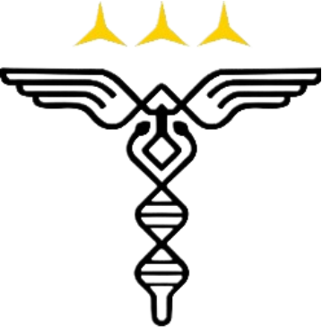

Rumah Sakit Adhyaksa Banten merupakan rumah sakit rujukan utama bagi pelayanan kesehatan yustisial di wilayah Provinsi Banten. Kami berkomitmen memberikan pelayanan kesehatan yang profesional, cepat, dan berintegritas tinggi.
Menjadi rumah sakit rujukan utama yang unggul, terpercaya, dan inovatif di bidang layanan kesehatan yustisial.